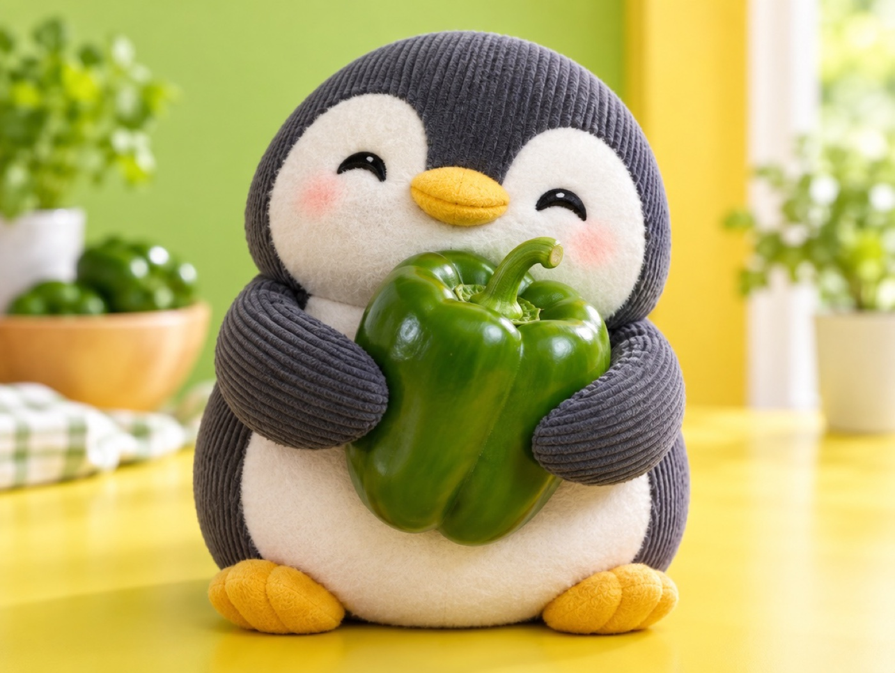

📝 DRAFT · 下書き — まだ本番に出していません · 下書き一覧
🐧 EVERYDAY LIFE⚡ 20 SEC
If someone dislikes you, it is just a matter of their taste 🫑

Not The Pepper
Even if a child doesn't like green peppers, the green pepper did nothing wrong.
Impossible Game
It is the same with people: never being disliked by anyone is an impossible game.
Quiet Or Loud
If you are quiet, people say "boring," and if you are bright, people say "too loud."
⚡ TRY IT
The green pepper's tasting day
5 tasters are coming. The pepper stays a pepper.
Who will taste first?
"Too bitter!" 😖
"I like carrots more." 🥕
"I don't know why, but… no."
"Can you be sweeter, please?" 🍬
"I love the bitter part!!" 💚
🫑 "I'm a pepper. Nice to meet you."
🫑 "That's OK. I'm still a pepper."
🫑 "Sorry, I can't be candy. I'm a pepper."
🫑 "Thank you! I'm happy I stayed a pepper."
0🫑 Times it changed itself
0💚 Fans
🎉 It stayed itself, and a fan came! The 4 "no"s were just their taste.
Your Fan
If you stay as you are, someday someone will say, "I love the bitter part!"
📚 I learned this from the Japanese blog "Panda no Ondo".